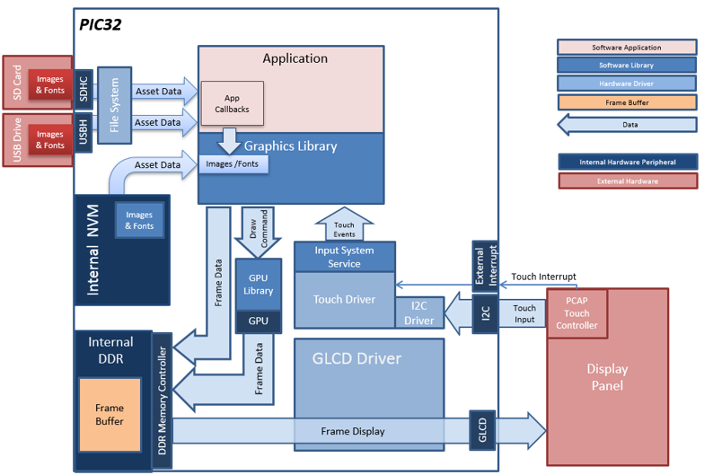
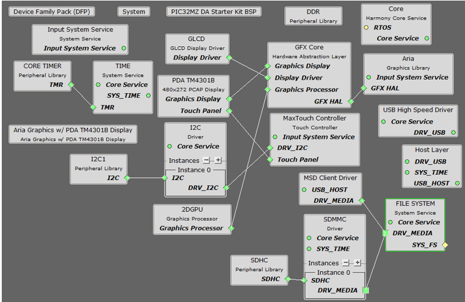
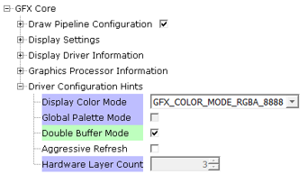
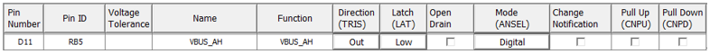
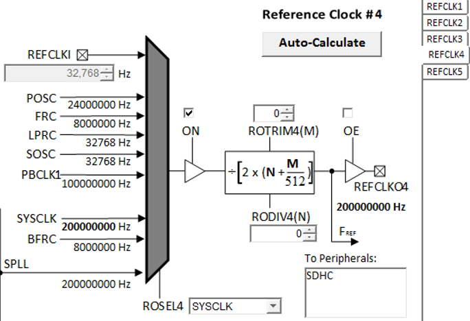
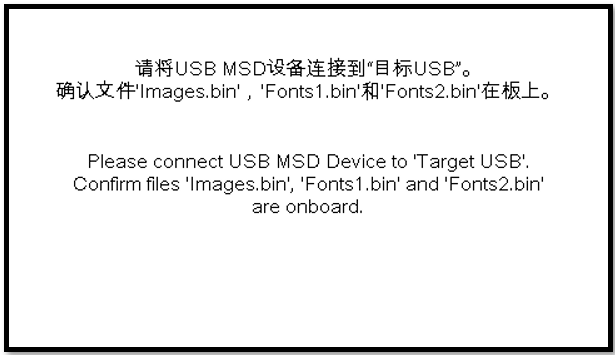
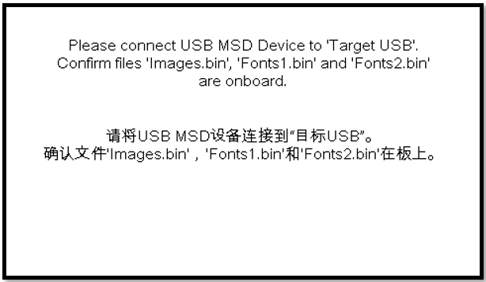
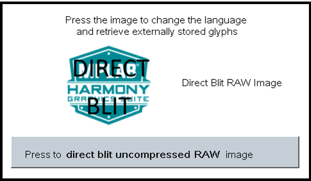

Defining the Architecture

The aria_quickstart_external_resources (external flash reader) application uses the reads previously programmed binary data from the external non-volatile SQI memory. The Graphics Library is used to render graphics to the display. Using the DMA, the Low-Cost Controllerless (LCC) Display Driver continuously transfers frame data from the frame buffer out to the LCD display.
The application also features user touch input through the integrated touch screen on the display panel. Touch input from the touch controller goes through the I2C port, and the Input System Service acquires the touch input information from the Touch and I2C drivers. The Input System Service sends touch events to the Graphics Library, which processes these events and updates the frame data accordingly.
This configuration runs on the PIC32MZ DA Internal DDR Starter Kit with the MEB-II and WQVGA display. The frame buffer is stored in the internal SRAM, and the Low-Cost Controllerless (LCC) display driver is used to manage the DMA that transfers the frame buffer content to the display via the EBI peripheral.
User touch input on the display panel is received thru the PCAP capacitive touch controller, which sends a notification to the Touch Input Driver. The Touch Input Driver reads the touch information over I2C and sends the touch event to the Graphics Library thru the Input System Service.
The application reads the binary data from the external non-volatile memory via the SQI peripheral configured with the SST26 driver.
Demonstration Features
• Aria Graphics Library
• Input system service and touch driver
• Time system service, timer-counter peripheral library and driver
• GLCD internal LCD display driver
• 32-bit RGBA8888 color depth (single-layered double buffering)
• GPU library with accelerated draw commands
• EBI peripheral library and driver
• I2C peripheral library and driver
• SST26 SQI driver
- Images and Fonts for user interface stored in external flash (NVM)
Creating the Project

The Project Graph diagram below shows the Harmony components that are included in this application. Lines between components are drawn to satisfy components that depend on a capability that another component provides.
Adding the “PIC32MZ DA Starter Kit BSP” and “Aria Graphics w/ PDA TM4301b Display” Graphics Template component into the project graph.
This will automatically add the components needed for a graphics project and resolve their dependencies. It will also configure the pins needed to drive the external peripherals like the display and the touch controller.
For the GFX Core component enable double buffering.

Additional components to support File System, USB, SDHC and SDMMC Driver needs to be added and connected manually.
Some of these components are fine with default settings, while other require some changes. The following is a list of all the components that required custom settings.
The USB MSD driver in Host mode will require VBUS_AH detection. In the Pin Configuration window, make sure pin RB5 is setup for VBUS_AH

To setup the clocking to drive the SDHC peripheral, in the Clock Manager, make sure REFCLK4 is setup as follow:

Building the Project
The parent directory for this application is gfx/apps/aria_quickstart_ext_res. To build this application, open the gfx/apps/aria_quickstart_ext_res/firmware/aria_qs_msd_host_sdcard_fs_mzda_intddr_sk_tm4301b.X project file in MPLABX IDE that corresponds to the hardware configuration.
The following table lists configuration properties:
|
Project Name |
BSP Used |
Graphics Template Used |
Description |
|
aria_qs_msd_host_sdcard_fs_mzda_intddr_sk_tm4301b.X |
PIC32MZ DA Starter Kit BSP |
Aria Graphics w/ PDA TM4301b Display |
Aria GFX on PIC32MZ DA with Internal DDR Starter Kit, MEBII and PDA TM4301b Display |
 Important! Important! |
This application may contain custom code that is marked by the comments // START OF CUSTOM CODE ... and // END OF CUSTOM CODE. When using the MPLAB Harmony Configurator to regenerate the application code, use the "ALL" merging strategy and do not remove or replace the custom code. |
Configuring the Hardware
On the MEB II, the EBIOE and LCD_PCLK (J9) must be jumpered. A connection establishes the GLCD's pixel clock output timing. The external SRAM memory on the board is disabled. The J9 jumper is located on the bottom of the MEB II board, beneath where the starter kit is plugged into the board. Refer to the following figure for the exact location.

Connect the PIC32MZ DA Starter Kit to the MEB II board

Power up the board by connecting the power adapter to J3 power connector on the MEB II board or a powered USB cable to the USB DEBUG
port on the Starter Kit board
Running the Demonstration
When power-on is successful, without a USB device attached, the demonstration will display a screen with the following message:

The entire screen is touch sensitive. Touch any part of the screen will toggle the languages of the strings shown on screen.

On the PC, from the folder of the corresponding configuration of the application, copy the files Images.bin, Fonts1.bin, and Fonts2.bin to an USB MSD device.
Note that the USB MSD device must be in FAT32 file format. With a USB-A to micro adaptor, Connect the USB MSD device as shown below:

If a valid USB MSD device is connected, the display will show a USB button. LED1 (green) will light up.
If a valid SD Card device is connected, the display will show a SD Card button. LED2 (orange) will light up.
If the application detects the presence of all three files (Images.bin, Fonts1.bin and Fonts2.bin) from either the USB MSD device or the SD Card, depending on the current language set, a button with text “Press To Load External Assets” or “按加载外部资产” will appear.
Press the button and the application will load a new screen that utilizes the image and font assets from the USB or the SD MSD device. Depending on the current language set, the display will have either one of these screens:

In the new screen, pressing the button will cause the application to load a new image. The image cycles in order from Uncompressed RAW with Direct Blit, Uncompressed RAW, Run-Length Encoded (RLE) RAW, to JPEG.
The MPLAB Harmony Graphics Suite logo is also a button. Pressing the logo will toggle the application between English and Simplified Chinese.
Note that all images and glyphs are retrieved from one of USB or the SD MSB device. Once in the main screen, the application will expect to consistently retrieve assets from the same device. Should the targeted MSB device become disconnected, the application will not crash. Instead, the graphics library will paint the screen without images and font. This highlights the robustness of the graphics library to handle asset retrieval errors.
The application is purposely setup in single-buffer configuration to allow visual inspection of the data retrieval speed of the various images and glyphs.
|
MPLAB® Harmony Graphics Suite
|